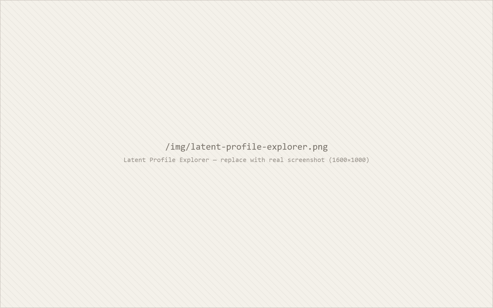

The Work
Latent Profile Explorer

Most employee listening programs segment by what the HR system provides: department, tenure, level. Those cuts are nearly flat — and the people having the worst experience are spread evenly across all of them, so no dashboard the organization already has will surface them.
This is a walkthrough of the alternative. Latent profile analysis finds kinds of people rather than differences between groups defined in advance. On a synthetic employee experience survey it recovers four distinct experience profiles, and shows what it costs to choose three or five instead.
It runs the same pipeline I built for a study of 1,698 students presented at AERA 2026, where profile membership showed no significant association with any demographic characteristic examined. The data here are synthetic; the method is the one that was peer reviewed.
Also
- Macroscope Brushable longitudinal time-series with rolling averages and derived-metric views, built to find signal in noisy daily self-report data. Live Code
- Plumb Record linkage and comparable-case matching across three years of county appraisal records, generating a statutory protest report. Live Code
- T4A Literature Mural A research corpus rendered as a navigable map, coded by construct, method, and population. Live Code